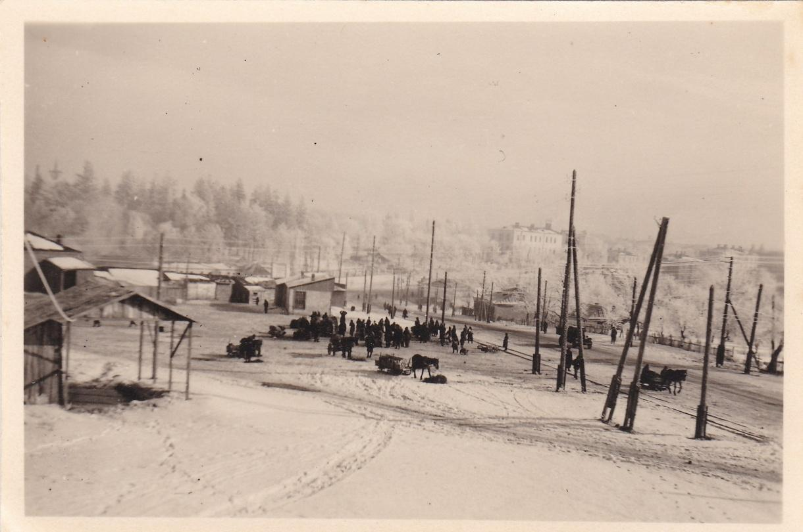
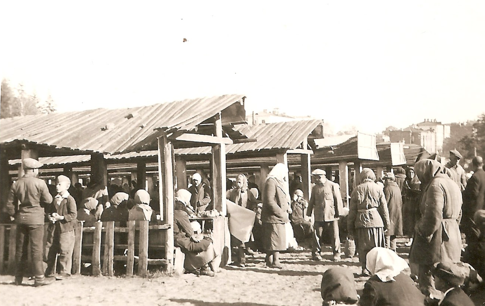
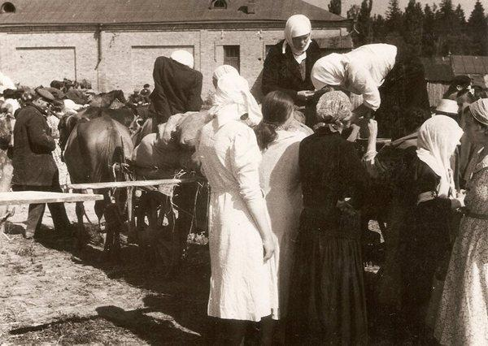
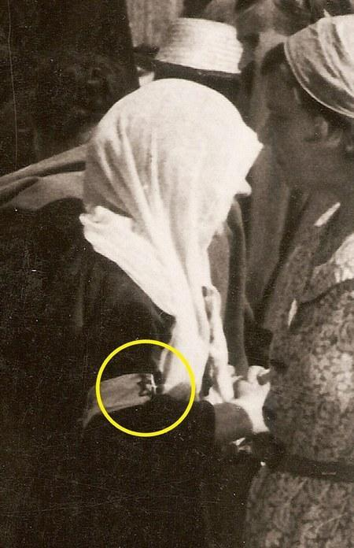

Історична карта 1945 року
Перейти до карти
Яке місце, навіть попри війну, збирає навколо себе людей, тварин та товари? Незалежно від подій в історії людства, базари завжди об'єднують різні когорти людей для продажу, купівлі, спілкування та соціальної взаємодії. Мова піде про яскравого представника такого базару – ринок «Каліча».
Почнемо із сучасності, адже кожен вінничанин знає, де знаходиться Вінницький універмаг, побудований у 1960-х роках. Саме на цьому місці було серце Калічанського ринку. Якщо поглянути на знімок ринку у воєнні часи (див. Рис. 1), можна чітко побачити обриси і краєвиди, притаманні сучасній Калічанській площі. На щастя, декомунізація пройшла успішно, і замість площі Юрія Гагаріна сучасні мешканці відновлюють старі назви.

Де знаходився і як зараз виглядає сучасна територія базару ми зрозуміли. Але чому саме ринок «Каліча»? Можливо, це пов’язано з річкою Каліча, що протікала територією Центрального парку ім. Леонтовича поблизу Хмельницького шосе, де вона бере свій початок. Перетинаючи вулиці Пирогова, Хлібну, Театральну, Архітектора Артинова та Князів Коріатовичів, вона впадає в Південний Буг. Більша частина цієї річки в наш час протікає під землею. Але так було не завжди: кілька сотень років тому Каліча розташовувалася посеред яру з крутими схилами. Через забудову та спроби позбутися яру річка тепер протікає трубами, закрита від очей. Це могло б логічно пояснити назву ринку на честь річки, але це лише одна з версій походження найменування.
На вашу думку, «каліка» та «Каліча» не є співзвучними? Існує думка, що ще з часів пізнього Середньовіччя в районі нинішнього Хмельницького шосе пролягав шлях, який називали Вінницьким гостинцем, а пізніше Літинською дорогою. Ближче до сучасної Калічанської площі мандрівники звертали ліворуч і оминали яр приблизно по лінії нинішньої вулиці Магістратської. Але були й ті, хто занадто вірив у себе і хотів йти навпростець через яр, де на них могли напасти розбійники і зробити каліками. Вінницький історик Секретарьов вважає, що таким могли займатися саме «мандрівні каліки».
Якщо вам здається, що версія із каліками не надто правдоподібна, ось інша: яр, калюжі, бруд і болото – це доволі притаманно для тих часів. Можливо мешканці того часу називали цю місцину «калюжею», або ж на польський манер – «калюшею». Замінивши кілька букв, отримуємо Калічу.
Погоджуватися чи ні з такими версіями – ваша справа. Як би там не було, у 1885 році міський ринок перенесли з Казанської площі на Хлібну площу.

В ті часи точилися великі баталії щодо переносу ринку: базар на Казанській площі називали Єрусалимським. За триста років діяльності покупців та торговців це місце настільки забруднилося, що влада вирішила його перенести. Вільною територією став яр; звісно ж, історії про каліцтво та розбійників не приваблювали діячів базару. Проте влада вирішила по-своєму: шляхом заборон та застосування міської політики вдалося перенести Єрусалимський базар на нове місце під новою назвою.
Далі історія завела ринок у Другу світову війну. Будучи наче дзеркалом, Каліча відображувала вплив подій на просте життя населення. Унікальні фотографії (див. Рис. 2), зроблені орієнтовно у серпні 1941 року, показують нам жінок з нарукавними пов'язками із зірками Давида. Ці зірки обов’язково мали носити всі євреї під час окупації. Проста деталь, випадкове фото, звичайний базар центральної України, але частинка страшної історії. Але на цьому не кінець: у період з 15 до 20 вересня 1941 року айнзацгрупа Ц та допоміжні поліційні підрозділи здійснили першу масову акцію розстрілів євреїв Вінниці – лише 19 вересня було розстріляно близько 9 тисяч мирних жителів міста Вінниці. Ці люди і далі могли торгувати в ятках на базарі чи то купувати продукти для обіду своєї сім’ї, але окупаційна влада назавжди забрала у них цю можливість.


Попри війну, базар продовжував функціонувати, забезпечуючи містян продуктами. У червні та липні 1941 року на Вінниччині спостерігалися дощі, які позитивно вплинули на урожай: озимина покращилася, а ярина досягла середнього рівня. Селяни виживали за рахунок залишків запасів і йшли до міста за дешевим хлібом. Благо, жнива завершувалися і ціни на житню муку коливалися від 2 карб. 20 коп. до 3 карб. 30 коп., а попит на печений хліб зменшився.
В газеті «Вінницькі Вісті» часто можна було побачити оголошення про пункти здачі різної продукції. Наприклад з 1 липня 1943 року Вінницький маслозавод запровадив нові правила для власників дійних корів: вони повинні були здавати молоко на спеціально визначені пункти – серед яких був і базар «Каліча». Тож навіть під час війни під впливом звірячої окупаційної влади базар був центральним місцем для збуту товарів та купівлі основних продуктів харчування.
Історія показує, наскільки важливим був ринок Каліча для населення. Але чому ж саме мешканці Вінниці забули історію та назву? Чому лише зараз почали відновлювати справжню назву площі замість того, аби називати її на честь радянського космонавта Юрія Гагаріна? Відповідь проста – історія, політика та незацікавленість містян.
15 вересня 1964 року відкрився новий центральний універмаг – візитівка радянської Вінниці. Колишній ринок переїхав вище по вулиці Пирогова до окремих приміщень і отримав назву «Урожай». Про базарне минуле площі всі забули: новобудови житлових комплексів та сучасний універмаг перетворили жваве місце пліток на «поважну» площу імені Юрія Гагаріна.
Лише війна та усвідомлення важливості історії власного міста змусили містян згадати історичну назву та зануритися в історію тепер знову уже Калічанської площі. Минуле базарної окраїни Вінниці нарешті нагадало про себе, дихаючи гучними хвилями базарного життя. Хоч зараз тут переповнено звуками машин, трамваїв та повітряної тривоги, Калічанська площа була є і буде частиною історії міста Вінниці.
автор Країло Олександра Олександрівна
Цікаві місця

Всі права захищені.